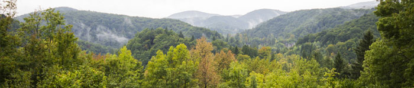
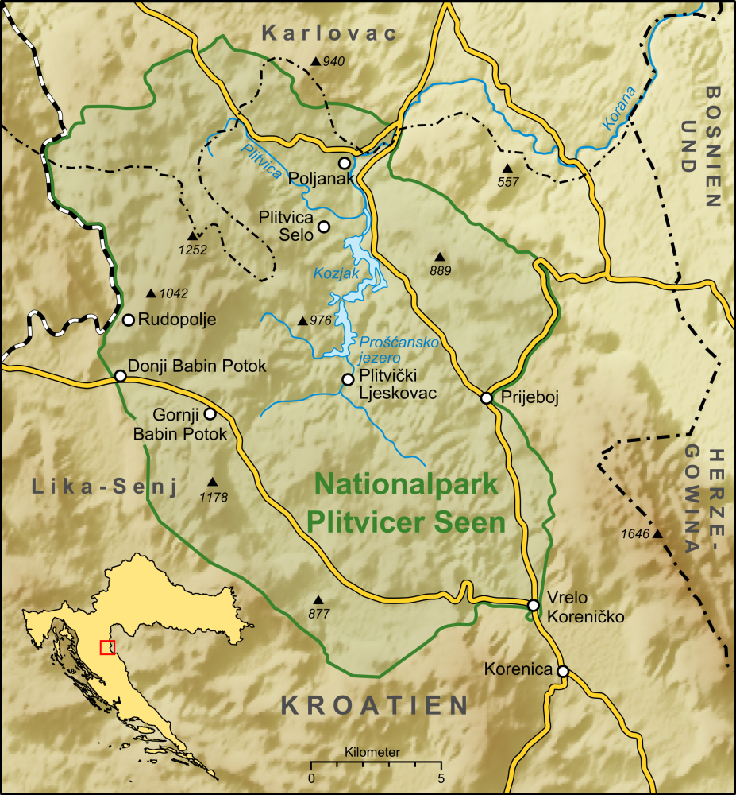
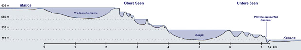
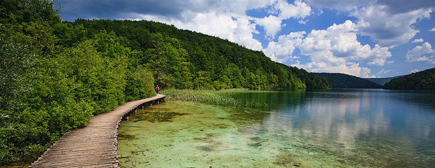
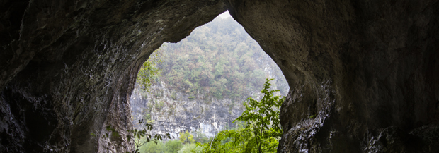
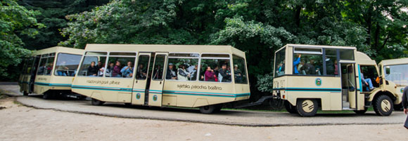
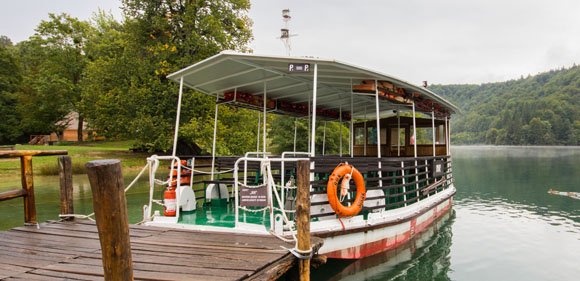

About Plitvice Lakes
Plitvice Lakes National Park - Croatia's most popular tourist attraction is a must-see. Sixteen lakes and fantastic waterfalls surrounded with a lush forest. There are also plenty of wild animals and many rare species.
• • •
History
Croatia's first and largest of its eight national parks - Plitvice Lakes was established in 1949 and covers a total area of 300 km2. The park was inscribed on the UNESCO's World Heritage List in 1979, in recognition of its "outstanding natural beauty and undisturbed production of travertine (tufa) through chemical and biological action".
Location and Altitude
{kind=link}
The altitude differs a lot within the park. The lowest point is located at 367 m and the highest point at 1279 m above sea level. However, the total height difference between the lakes themselves is only 135 m, but the largest waterfall Veliki Slap is 70 m tall.
The park is located in central Croatia, in the eastern part of the mountainous region of Lika-Senj county. Don't know how to get there? Then you should click here.
Made by: Lencer - license
{kind=link}
Made by: Raffaello - CC: BY-SA
Walking Trails
The sixteen lakes join together over a distance of eight km with pathways and wooden walking trails around them that are accessible to visitors. The trails are very good and it's easy to walk around the park. Different routes with approximate duration time you will find here.
There are two entrances into the park. Very excitingly titled Entrance 1 (located at the lowest part of the sixteen lakes – north end) and Entrance 2 (located at the largest lake Kozjak in the middle).
Photo by: Dormidon - source - CC: BY-SA
Different Seasons
Spring
Summer
Fall
Winter
Plitvice Lakes isn't just a fabulous sight in the summer. It is also worth seeing in the other seasons.
After a cold and snowy winter the park starts to come alive. It's getting warmer and the green colour starts to show. If you are a flower enthusiast this is the time to go. The Plitvice park is home of 1267 plant species. The water level is high during the spring season.
Photo by: Sergiu Bacioiu - CC: BY-NC
In the summer the park has a lot of visitors. About 11 000 people visit the park every day during summer. It can get a bit crowded. The temperature is high and the weather is often very good. The water level is often low in comparison to spring and fall.
Photo by: Fredrik Beiron
This is the time to go if you want the park to be sparkling with colours. It is less crowded which makes it a lot more pleasant to walk around and enjoy the atmosphere. The weather gets colder and a bit rainier in this season, but the water level is high.
Photo by: whl.travel - CC: BY-NC-SA
There is snow and ice everywhere and the waterfalls have transformed into ice sculptures. This is a fantastic view that many people do not see. Entrance 2 closes during the winter season and bad weather conditions can close the park down for a few days sometimes.
Interesting
The lakes are famous for their distinctive colours, ranging from azure to green, grey or blue. The colours change very often. It all depends on the quantity of minerals or organisms in the water and the angle of sunlight hitting the surface.
There are a lot of caves in this area too, but few are available for tourists to see. More info here. Many of these caves could be arranged as tourist attractions for organized groups.
Photo by: Fredrik Beiron
Transportation
-
Shuttle Bus
Electric boat
There is no payment involved when travelling with the shuttle bus or the electric boat if you have paid the entrance fee. The cost is included in the entrance fee so make sure to keep your entrance ticket.
This bus ("The panoramic train") goes between four stations: Lower lakes near Entrance 1 (ST1), Entrance 2 (ST2), Upper lakes – middle (ST3) and Upper lakes – top (ST4). Therefore you can walk between two stations and take the shuttle bus on the way back and save some time. Every 15 or 20 minutes there are a new bus waiting for you at the stations.
Photo by: Fredrik Beiron
With this boat you can cruise on the parks largest lake - lake Kozjak situated between the lower lakes and the upper lakes. Electricity is used as fuel to save the park from toxic waste such as oil and gas. It runs every 15 or 30 minutes depending on the season and the ride takes approximately 20 minutes.
Photo by: Fredrik Beiron
Guided Tour Groups
Guided tours are available for reservation with a minimum of two weeks in advance. A four hour tour costs 700 Kuna and every additional hour is 200 Kuna. The tour can be customized after the group's interests. A minimum of 15 persons and a maximum of 60 persons can be in one group.
The guided tours are available in English, German, Italian, French, Spanish and Croatian. Send your request to the park's Sales and Marketing department.
Accommodation
It is possible to stay within the park at one of its three hotels very close to Entrance 2: Hotel Jezero, Hotel Plitvice or Hotel Bellevue. There is also a very wide selection of private accommodations close to the park. You can find them here for example.
Two campsites are an option as well. Camp Korana located 7km from Entrance 1 or Camp Borje located 15 km from Entrance 2.
Information
- The Park is open daily all year round (Entrance 2 closes between October-April).
- Over one million tourists visit the park every year.
- It is forbidden to swim in any lake within the National Park area.
- There's an entrance fee that acts as a contribution to the Park's upkeep and protection.
- Cheaper 2-day tickets for the Park can also be purchased.
- Entrance fee for adults:
80 Kunas (€11) in November – March
110 Kunas (€15) during April to October
More detailed info here.